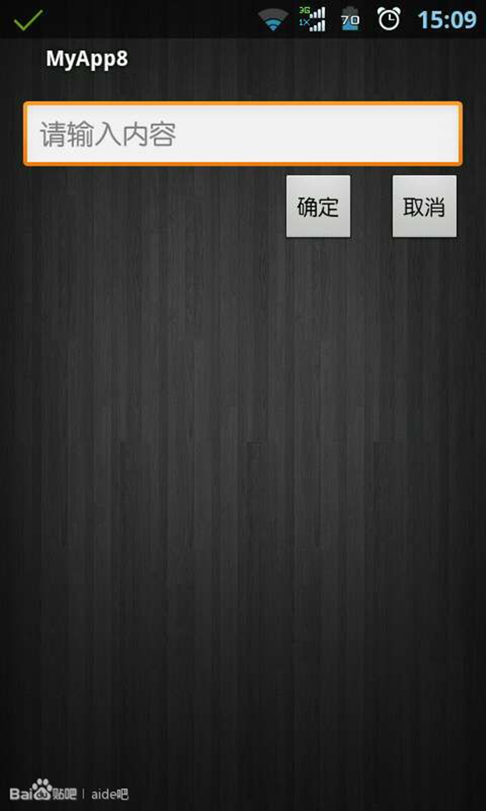

RelativeLayout相对布局(20课)
RelativeLayout相对布局是我们比较常用的一种布局，之前为了介绍控件方便，而且aide默认帮我们生成的是LinearLayout所以就没有讲，如果是电脑默认的帮我们生成的布局文件是相对布局。在相对布局里面放置的控件默认都是在左上角位置，后面的控件会把前面的控件所覆盖，如果我们要确定一个控件的位置必须要确定左右和上下。

首先我们先看下我们的程序的效果，那么如何实现这样的界面呢，接下来我们看我们的代码。
我们新建一个项目，打开我们的布局文件，定义一个相对布局，第一行是版本，所使用的字符编码。我们直接把原来的LinearLayout修改成RelativeLayout就可以了，设置布局的宽高为匹配屏幕，padding这个属性是内边距，就是里面的子元素与它的距离，我们下面会讲到。这个是上下左右的内边距，我们还可以每个方向单独设定
下内边距
paddingBottom
左内边距
paddingLeft
右内边距
paddingRight
上内边距
paddingTop
首先看我们的输入框，我们添加一个id，因为后面需要使用，宽度为匹配父空间，因为父控件RelativeLayout设置了内边距的原因，所以与屏幕的左边，右边和顶部的距离都是15dp，hint的属性是设置当输入框的内容为空的内容，效果请看上面。当我们进行输入时候会先清空。
再看我们的取消按钮，我们添加一个id， layout_below其值使用@id指向一个控件id，位于某控件下方，这里是在输入框下面，与其相对应的属性
在某控件的上方
layout_above
在某控件左边
layout_toLeftOf
在某控件右边
layout_toRightOf

接下来看我们的确定按钮， layout_alignBottom的值使用@id指向一个控件id，底部与某控件的底部对齐，这里我们就确定了按钮的上下位置，与取消按钮底部于同一水平线上，与之相对应的属性有
与某控件的顶部对齐
layout_alignTop
与某控件的左边对齐
layout_alignLeft
与某控件右边对齐
layout_alignRight
然后layout_toLeftOf位于某控件的左边，上面有介绍，这时会紧贴取消按钮，我们使用 layout_marginRight设置一下右外边距为20dp，这样确定按钮就离取消按钮距离20dp，如果取消按钮也设置一下左外边距是20dp，那么两个按钮就距离40dp，相对应的属性介绍
下外边距
layout_marginBottom
右外边距
layout_marginRight
上外边距
layout_marginTop
四个方向的外边距
layout_margin